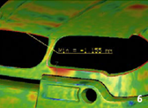

Tebis CAD/CAM yazýlýmýnýn RSC modülü, mesh modeller (STL) üzerinde yüksek kaliteli yüzeylerin oluþturulmasý için kullanýlan tersine mühendislik yazýlýmýdýr. Yazýlýmda sayýsallaþtýrýlmýþ veri modülü kullanýlarak hazýrlanan ya da STL arayüzü ile alýnan mesh verileri kullanýlabilir. Tebis RSC; ürün tasarýmý, mevcut bir ürünün kopyalanmasý ve sac kalýp imalatý gibi süreçler için ideal bir çözümdür. Bu süreçlerde nihai sonuca genellikle birçok iterasyon sonrasýnda ulaþýlmaktadýr. Mevcut fiziksel yüzeylerin taranmasý, CAD ortamýnda optimize ve tadil edilmesi ve ardýndan talaþlý imalat kullanýlarak tekrar fiziksel modellere dönüþtürülmesi gereklidir. Bazý durumlarda da tüm bu iþlemlerin birden fazla kez tekrarlanmasý gereklidir.
Tebis RSC yazýlýmý gerek kullaným kolaylýðý, gerekse hýzý ile kullanýcýlarýna birçok avantaj saðlamaktadýr. Tebis RSC yazýlýmýnýn en önemli özelliði; oluþturulan yüzeylerin parça, kalýp tasarým iþlemlerinde ve kalýp imalatýnda doðrudan kullanýlacak kalitede olmalarý ve bu kaliteyi yakalamak için harcanan emek ve sürenin az olmasýdýr. Tüm yüzeyler mümkün olan en düþük toleranslar ve teðet geçiþler ile oluþturularak elde edilen yüzeylerin sonraki operasyonlar için CAD ortamýnda kullanýlabilir olmasý saðlanmaktadýr.
Kalýp imalat endüstrisinden örnek uygulamalar
| Taranmýþ gerçek parça ile CAD model arasýndaki her noktada ölçü sapmalarý görülebilir. Grafik raporlama yapýlabilir. |
|
| Üzerinde yapýlan iþlemlerden (tesviye, tadilat, alýþtýrma gibi..) dolayý deðiþen kalýp yüzeyinin tarama datasý kullanýlarak mevcut CAD yüzeyleri güncellenebilir. |
|
| Kullanýcýlar eðrileri kullanarak, budanmýþ yüzeyleri (pembe) ve dikdörtgensel budanmamýþ yüzeyleri (mavi) tamamen otomatik olarak oluþturabilirler. |
|
| Ýstenilen alanlar, deðiþik kriterlerde analiz edilebilir. (örn; boþluklar, açýlar, teðetlikler v.b gibi) |
 |
| Yüzey komutlarý ile oluþturulan yüzeyler tekrar deðiþtirilebilir (ör; þekilde görüldüðü gibi bir yüzeyi oklar yönünde uzatma/kýsaltma gibi.) |
|
Ürün geliþtirme sürecinden örnek uygulamalar
| Bir aracýn ön tarafýnýn, optimize edilmiþ mesh modeli; 2,2 m2 alaný olan ve yaklaþýk 500.000 üçgensel mesh yapý içeriyor. |
|
| Mesh model üzerinde, kullanýcýlarýn eðrileri oluþturmasý için önemli olan eðrisellik gösterimi. |
|
| Grafik eðrisellik ve çizim fonksiyonlarý kullanýlarak otomatik olarak oluþturulmuþ kenar eðrileri. |
|
| Sistem yüzeyleri tam otomatik olarak hesaplar. Oluþturulan yüzeyler kenar eðrilerle tamamen iliþkilidir. |
|
| Zebra yansýmasý kullanýlarak, oluþturulan yüzeylerin kalitesi ve aralarýndaki geçiþler kontrol edilebilir. |
|
| Ofset analizi ile taranmýþ parça mesh verisi ve oluþturulan yüzeyler arasýnda mesafe analizi yapýlabilir. |
 |
Otomatik yüzeylerin oluþturulmasý için eðriler:
Tebis RSC kullanýcýlarý mümkün olduðu kadar az bir çalýþma ile model geometrisine uygun olarak eðriler oluþturur. RSC, kullanýcýlara yapýlacak iþe yönelik bir çok opsiyon sunar;
Otomatik yüzey oluþturma:
Komponet üzerine düzenli bir að yapýsýnýn izdüþümü alýnarak yüzeylerin otomatik olarak oluþturulmasý.Tebis bu yüzeyleri birbirlerine C2 süreklilikle birbirlerine baðlar. Bu teknik yüzey kalite ve yapýsýnýn öncelikli olmadýðý parçalar için kullanýlýr. |
|
Güncelleme fonksiyonu:
Uygulamada parçalar veya kalýplar elle deðiþtirilebilirler. Bu durumda elle müdahale ile deðiþtirilmiþ parçanýn taranmýþ modeline, kenarlar otomatik olarak izdüþümü alýnarak CAD model güncellenebilir. Böylece, CAD model ile gerçek hayattaki parçanýn bire bir ayný olmasý saðlanýr. |
|
Akýllý fonksiyonlar:
Taranmýþ parça yüzeyi radyüsler ve eðrisellik alan sýnýrlarý açýsýndan deðerlendirilerek kenar eðrileri oluþturulur. |
|
Çizim fonksiyonlarý:
Eðriler ve çizgiler doðrudan mesh model üzerinde, iliþkili bir þekilde ve istenilen bir toleransta oluþturulabilir. |
|
Ýrtibat:
 Redoks Mühendislik Bilgisayar Tic. Ltd. Þti. Redoks Mühendislik Bilgisayar Tic. Ltd. Þti.
Buttim Ýþ Merkezi C Blok Kat:4 No:1184,
Bursa
Tel: (224) 211 62 00
Kýsýklý Mah. Alemdað Cad. Yanyol Sok. Dumankaya Sitesi B Blok No:27/4
Üsküdar, Ýstanbul
Tel: (216) 521 53 85
www.redoks.com.tr |